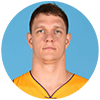
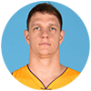

凯里-欧文
Kyrie Andrew Irving

#2
骑士 后卫 1.91m 88kg
生日：1992年03月23日 选秀：2011年


 



Kyrie Andrew Irving
#2
骑士 后卫 1.91m 88kg
生日：1992年03月23日 选秀：2011年
LeBron James
#23
骑士 前锋-后卫 2.03m 113kg
生日：1984年12月30日 选秀：2003年
Kevin Wesley Love
#0
骑士 前锋 2.08m 114kg
生日：1988年9月7日 选秀：2008年
Tristan Trevor James Thompson
#13
骑士 前锋 2.08m 108kg
生日：1991年3月13日 选秀：2011年
Earl Smith III
#5
骑士 后卫 1.98m 102kg
生日：1985年9月9日 选秀：2004年
Iman Asante Shumpert
#4
骑士 后卫 1.96m 100kg
生日：1990年6月26日 选秀：2011年
Richard Allen Jefferson
#24
骑士 前锋 2.01m 106kg
生日：1980年6月21日 选秀：2001年
Channing Thomas Frye
#9
骑士 前锋-中锋 2.11m 116kg
生日：1983年5月17日 选秀：2005年
Matthew Dellavedova
#8
骑士 前锋-中锋 1.93m 91kg
生日：1990年9月8日 选秀：非选秀球员
Dahntay Lavall Jones
#30
骑士 后卫 1.98m 95kg
生日：1980年12月27日 选秀：2003年
Maurice Williams
#52
骑士 后卫 1.85m 90kg
生日：1982年12月19日 选秀：2003年
Timofey Pavlovich Mozgov
#20
骑士 中锋 2.16m 125kg
生日：1986年7月16日 选秀：非选秀球员
James Andrew Jones
#1
骑士 前锋 2.03m 99kg
生日：1980年10月4日 选秀：2003年
Draymond Green
#23
勇士 前锋 2.01m 104kg
生日：1990年3月4日 选秀：2012年
Harrison Barnes
#40
勇士 前锋 2.03m 102kg
生日：1992年5月30日 选秀：2012年
Wardell Stephen Curry II
#30
勇士 后卫 1.91m 86kg
生日：1988年3月14日 选秀：2009年
Andrew Michael Bogut
#12
勇士 中锋 2.13m 118kg
生日：1984年11月28日 选秀：2005年
Klay Alexander Thompson
#11
勇士 后卫 2.01m 98kg
生日：1990年2月8日 选秀：2011年
Shaun Patrick Livingston
#34
勇士 后卫 2.01m 83kg
生日：1985年9月11日 选秀：2004年
Andre Tyler Iguodala
#9
勇士 后卫-前锋 1.98m 94kg
生日：1984年1月28日 选秀：2004年
Leandro Mateus Barbosa
#19
勇士 后卫 1.91m 88kg
生日：1982年11月28日 选秀：2003年
Festus Ezeli
#31
勇士 中锋 2.11m 120kg
生日：1989年10月21日 选秀：2012年
Anderson Franca Varejao
#18
骑士 前锋-中锋 2.11m 124kg
生日：1982年9月28日 选秀：2004年
Ian Clark
#21
勇士 后卫 1.91m 79kg
生日：1991年3月7日 选秀：非选秀球员
JMarreese Speights
#5
勇士 前锋 2.08m 116kg
生日：1987年8月4日 选秀：2008年
Brandon Leray Rush
#4
勇士 前锋 1.98m 95kg
生日：1985年7月7日 选秀：2008年